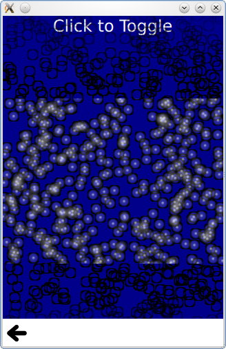

Qt Quick Particles Examples - System
This is a collection of examples using Affectors in the QML particle system.

This is a collection of small QML examples relating to using Affectors in the particle system. Each example is a small QML file emphasizing a particular type or feature.
Dynamic comparison compares using the particle system to getting a similar effect with the following code that dynamically instantiates Image types.
Item { id: fakeEmitter function burst(number) { while (number > 0) { var item = fakeParticle.createObject(root); item.lifeSpan = Math.random() * 5000 + 5000; item.x = Math.random() * (root.width/2) + (root.width/2); item.y = 0; number--; } } Component { id: fakeParticle Image { id: container property int lifeSpan: 10000 width: 32 height: 32 source: "qrc:///particleresources/glowdot.png" y: 0 PropertyAnimation on y {from: -16; to: root.height-16; duration: container.lifeSpan; running: true} SequentialAnimation on opacity { running: true NumberAnimation { from:0; to: 1; duration: 500} PauseAnimation { duration: container.lifeSpan - 1000} NumberAnimation { from:1; to: 0; duration: 500} ScriptAction { script: container.destroy(); } } } } }
Note how the Image objects are not able to be randomly colorized.
Start and Stop simply sets the running and paused states of a ParticleSystem. While the system does not perform any simulation when stopped or paused, a restart restarts the simulation from the beginning, while unpausing resumes the simulation from where it was.
Timed group changes is an example that highlights the ParticleGroup type. While normally referring to groups with a string name is sufficient, additional effects can be done by setting properties on groups. The first group has a variable duration on it, but always transitions to the second group.
ParticleGroup { name: "fire" duration: 2000 durationVariation: 2000 to: {"splode":1} }
The second group has a TrailEmitter on it, and a fixed duration for emitting into the third group. By placing the TrailEmitter as a direct child of the ParticleGroup, it automatically selects that group to follow.
ParticleGroup { name: "splode" duration: 400 to: {"dead":1} TrailEmitter { group: "works" emitRatePerParticle: 100 lifeSpan: 1000 maximumEmitted: 1200 size: 8 velocity: AngleDirection {angle: 270; angleVariation: 45; magnitude: 20; magnitudeVariation: 20;} acceleration: PointDirection {y:100; yVariation: 20} } }
The third group has an Affector as a direct child, which makes the affector automatically target this group. The affector means that as soon as particles enter this group, a burst function can be called on another emitter, using the x,y positions of this particle.
ParticleGroup { name: "dead" duration: 1000 Affector { once: true onAffected: worksEmitter.burst(400,x,y) } }
If TrailEmitter does not suit your needs for multiple emitters, you can also dynamically create Emitters while still using the same ParticleSystem and image particle
for (var i=0; i<8; i++) { var obj = emitterComp.createObject(root); obj.x = x obj.y = y obj.targetX = Math.random() * 240 - 120 + obj.x obj.targetY = Math.random() * 240 - 120 + obj.y obj.life = Math.round(Math.random() * 2400) + 200 obj.emitRate = Math.round(Math.random() * 32) + 32 obj.go(); }
Note that this effect, a flurry of flying rainbow spears, would be better served with TrailEmitter. It is only done with dynamic emitters in this example to show the concept more simply.
Multiple Painters shows how to control paint ordering of individual particles. While the paint ordering of particles within one ImagePainter is not strictly defined, ImageParticle objects follow the normal Z-ordering rules for Qt Quick items. This example allow you to paint the inside of the particles above the black borders using a pair of ImageParticles each painting different parts of the same logical particle.